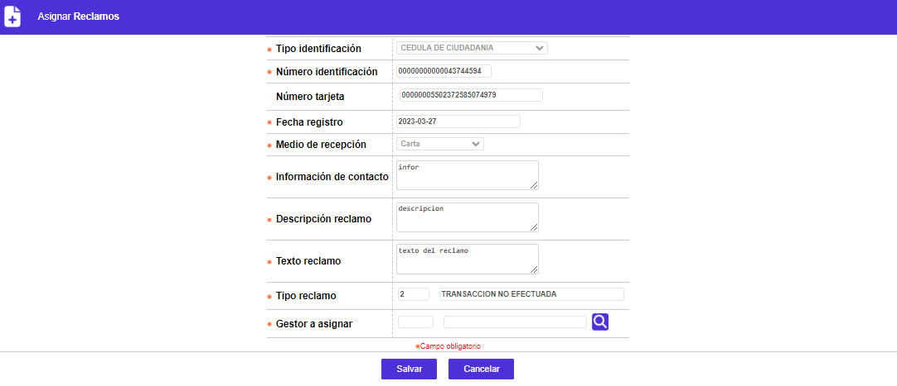

Reclamos
Asignar reclamos: Mediante esta función se asignan manualmente los gestores a los reclamos creados.
Cuando se utiliza esta opción, se despliega el siguiente formulario con un botón para devolverse a la opción principal Reclamos.
En este formulario ninguno de los campos desplegados es modificable, excepto el campo Gestor a asignar.

Gestor a asignar |
Este campo despliega lista de valores con los gestores que se encuentren parametrizados en todas las actividades del reclamo seleccionado e indica que dicho gestor tramitará el reclamo completamente. |